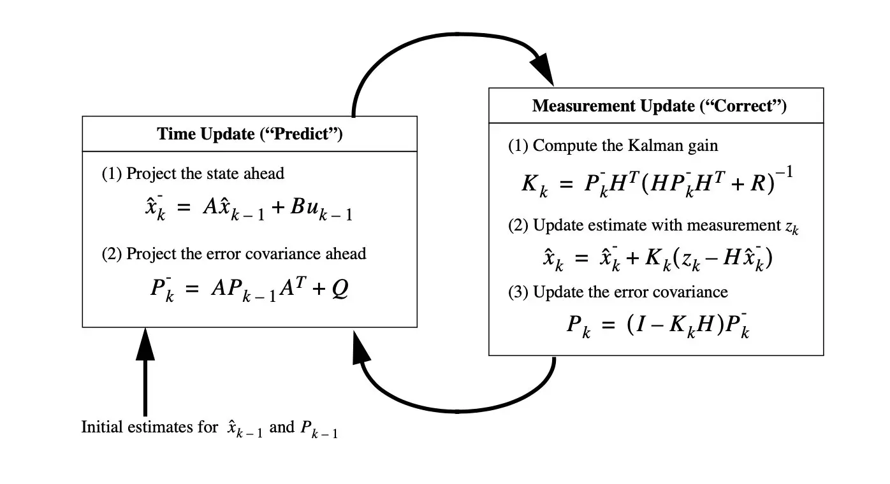

卡尔曼滤波（Kalman filter）是一种高效率的递归滤波器（自回归滤波器），它能够从一系列的不完全及包含杂讯的测量中，估计动态系统的状态。卡尔曼滤波会根据各测量量在不同时间下的值，考虑各时间下的联合分布，再产生对未知变数的估计，因此会比只以单一测量量为基础的估计方式要准。卡尔曼滤波得名自主要贡献者之一的鲁道夫·卡尔曼，最早用于解决阿波罗计划的轨道预测问题。 上面的定义摘自维基百科，是对卡尔曼滤波的专业阐述，为了便于理解通过下面两个例子来对卡尔曼滤波有个大致的了解。
航天器的发动机能够在足够高的温度下燃烧燃料，为航天器提供足够的动力，航天器发动机燃烧室在燃烧时温度可以达到数千摄氏度，过高的温度可能会损坏发动机的机械部件，导致火箭发射失败，因此需要密切关注火箭燃烧室的内部温度，显然在燃烧室内部放置温度传感器会直接被融化。此时，无法直接测量燃烧室的内部温度，基于这种情况，可以在燃烧室外放置一个温度传感器测量燃烧室的外部温度，使用卡尔曼滤波器利用外部温度来估算燃烧室的内部温度。
这是卡尔曼滤波器一种使用方式：
当系统的状态无法通过直接测量得到但是可以间接测量时，可以使用卡尔曼滤波通过间接测量值来估算系统的状态。 总所周知，汽车的导航系统使用
车载传感器（Onboard sensors）得到汽车的当前位置并导航到目的地。常用的车载传感器有：惯性测量单元（Inertial measurement unit,IMU）使用加速度计和陀螺仪来测量汽车的加速度和角速度；里程表(Odometer)测量汽车的相对行驶距离；GPS接收器(GPS receiver)接收来自GPS卫星的信号，来确定汽车在地球表面的位置。
IMU中的加速度计提供了汽车当前的加速度大小及方向，但是想要获得汽车的位置，需要对加速度进行两次积分（\(s =\iint a(t)dt\)）得到汽车的位置，数值积分算法在计算位置时会存在微小的误差并且会随着时间的累积会不断，最终产生积分漂移，完全偏离汽车的正确位置；里程表容易受到轮胎压力和道路状况的影响；而GPS位置跟新速度慢，而且会存在一定噪声，最大问题还是在车辆通过隧道或车库时，信号很差，甚至无法接收到信号。三种车载传感器各自有各自的局限和优势，只用单独一种传感器进行定位效果都不尽如人意，此时可以使用卡尔曼滤波融合三种传感器得到汽车位置的最优估计值。
这是卡尔曼滤波的另一种使用方式：
组合各种可能受到噪声影响的传感器测量值，得到一个最优的估计值。
卡尔曼滤波主要应用于高精度传感系统中，在时下大热的机器人、无人机、自动导航都有着应用，由于其递归的特性（即只要获知上一时刻状态的估计值以及当前状态的观测值就可以计算出当前状态的估计值），因此不需要记录观测或者估计的历史信息。与大多数滤波器不同之处，卡尔曼滤波器是一种纯粹的时域滤波器，它不需要像低通滤波器等频域滤波器那样，需要在频域设计再转换到时域实现。
其本质思想是采用信号与噪声的状态空间模型，利用前一时刻地估计值和现时刻的观测值来更新对状态变量的估计，求出现时刻的估计值，它适合于实时处理和计算机运算。下面我们一步步来解开卡尔曼滤波的神秘面纱。
隐马尔可夫
随机过程
随机过程被认为是概率论的“动力学”部分，其研究对象是随时间演变的随机现象。对于这种现象，已不能用随机变量或多维随机变量来合理表达，而需要一族（无限多个）随机变量来描述。高等教育出版社的《概率论和数理统计》第四版是这样定义随机过程：
设\(T\)是一无限实数集，我们把依赖于参数\(t\in T\)的一族随机变量称为
随机过程，记为\(\{X(t),t\in T\}\),其中对\(\forall t \in T,X(t)\)是一随机变量，\(T\)叫做参数集。通常把\(t\)看作时间，称\(X(t)\)为时刻\(t\)时过程的状态，而\(X(t_1)=x,x \in R\)定义为\(t=t_1\)时过程处于状态\(x\)，对于\(\forall t\in T,X(t)\)的所有可能取一切值的全体称为随机过程的状态空间，泊松过程和维纳过程都是典型的随机过程，篇幅有限这里不做进一步展开，有兴趣的读者可以自行Google。
马尔可夫过程
一个随机过程在时刻\(t_0\)所处的状态为已知的条件下，随机过程在时刻\(t（t>t_0)\)所处的状态与其在时刻\(t_0\)之前所处的状态无关。简而言之，就是“将来”仅依赖于”现在”与“过去”无关。我们称这种特性为马尔可夫性或无后效性。而这种具有马尔可夫性质的随机过程称之为马尔可夫过程，可以推出，泊松过程是时间连续状态离散的马尔可夫过程，而维纳过程则是时间状态都连续的马尔可夫过程。对于时间和状态都是离散的马尔可夫过程就是构成卡尔曼滤波的重要基石马尔可夫链：
对于随机过程\({X_n,n=1,2,\cdots}\),若其条件概率分布满足: \[ P\{X_{n+1}=x_{n+1}|X_n=x_n,\cdots,X_1=x_1\}=P\{X_{n+1}=x_{n+1}|X_n=x_n\} \]，则称此随机过程为马尔可夫链。
状态转移矩阵
在马尔可夫链中，从一个状态转移到另一个状态的概率称为状态转移概率，如果系统的可能状态是有限的，例如有\(K\)个状态，则状态转移概率构成一个\(K\times K\)的状态转移矩阵： \[P=\left[ \begin{matrix} p_{11} & p_{12} & \cdots & p_{1K} \\ p_{21} & p_{22} & \cdots & p_{2K}\\ \cdots & \cdots & \cdots &\cdots \\ p_{K1} & p_{K2} & \cdots & p_{KK}\end{matrix} \right]\] 其中矩阵的每一行的和为1，该矩阵是一个随机矩阵，任何一个随机矩阵都可以作为状态转移矩阵 。
隐马尔可夫模型
在马尔可夫模型中，系统的状态是直接可见的，这样状态的转移概率就可以构成该系统的全部参数。但是，在实际生活中更多的情况是：系统状态并不是直接可见，我们往往只能观测到受状态影响的某些变量。显然对这些可观测到的变量使用马尔可夫模型对系统进行状态分析是不严谨的。为此，对于这种含有隐含未知参数的马尔可夫过程，数学家通过随机过程可观察的参数确定该过程的隐含参数，然后利用这些参数来作进一步分析，这也是大名鼎鼎的隐马尔可夫模型（Hidden Markov model，HMM）的本质，至于隐马尔可夫模型的更多详细内容，如果进行展开的话，需要花费大量篇幅，在此先不做展开。隐马尔可夫模型在语音识别和模式识别领域都有着应用，而卡尔曼滤波也是构建在隐马尔可夫模型之上的。
线性卡尔曼滤波
卡尔曼滤波是一个递归滤波器，其算法本质是通过动态系统的有限个观测值，估计动态系统的隐藏状态。接下来，我们从动态系统的状态空间模型开始，一步步推导卡尔曼滤波算法。
状态空间模型
动态系统都具有一个基本特征：系统的状态，那么什么是系统的状态呢，其定义如下：
一个随机动态系统的状态被定义为最少量的信息，这些信息包含过去作用于该系统的输入的影响，并足以完全描述系统将来的行为。（该定义截取自机械工业出版社译制的《神经网络与机器学习》第三版 第十四章 动态系统状态估计的贝叶斯滤波）
通常我们使用状态空间模型来描述动态系统状态对外部世界的影响，一般而言，状态空间模型分为两个部分：
系统模型
系统模型使用时域函数来描述动态系统状态的演变，其数学表示为一阶马尔可夫链：\(x_{n+1}=\zeta_{n}(x_n,\omega_n)\)，其中\(n\)表示离散时间，向量\(x_n\)表示动态系统当前的状态，向量\(x_{n+1}\)表示下一状态的值，向量\(\omega_n\)表示过程噪声，\(\zeta\)为\(x_n,\omega_n\)的向量函数，会随时间改变。
测量模型
测量模型描述了动态系统状态对外部世界的影响，公式如下：\(y_n = \xi(x_n,v_n)\)，其中向量\(y_n\)表示外部世界对动态系统的一组观测值，向量\(v_n\)是外部世界噪声的测量值，\(\xi\)是\(x_n,v_n\)的向量函数，会随时间改变。
对于状态空间模型，有着如下假设：
- 动态系统的任意时刻\(k\),其过程噪声\(\omega_k\)与初始状态\(x_0\)无关；
- 动态系统的过程噪声\(\omega_n\)于测量噪声\(v_n\)是统计独立，也就是说对\(\forall i,j\)都有\(E[\omega_iv_j^T]=0\)成立；
一般而言，跟状态与状态之间的是否为线性关系及过程噪声、测量噪声二者是否服从高斯分布将状态空间模型分为四大类：
- 线性高斯模型
- 线性非高斯模型
- 非线性高斯模型
- 非线性非高斯模型
显然不管是非线性还是非高斯或二者兼之的状态空间模型，其处理难度是远高于线性高斯模型的，我们先来处理最简单的状态空间模型——线性高斯模型。
线性卡尔曼滤波的理论推导
对于线性高斯模型，其状态空间模型可设为如下形式：
\[ \begin{cases} x_{n}=A_{n}x_{n-1}+\omega_{n} \\ y_n = H_nx_n+v_n \end{cases} \] 其中\(\omega_n\sim N(0,Q),v_n\sim N(0,R)\)，\(A_{n+1}\)是动态系统从状态\(x_n\)到\(x_{n+1}\)的状态转移矩阵，\(H_n\)是测量矩阵，表示系统状态\(x_n\)对\(y_n\)的增益，将系统状态映射到外部世界。
考虑到动态系统会受到系统中已知的控制器的控制信息的影响，需要在系统模型中加入这部分信息，修正后的状态空间模型如下：
\[ \begin{cases} x_{n}=A_{n}x_{n-1}+B_{n}\mu_{n}+\omega_{n} \\ y_n = H_nx_n+v_n \end{cases} \] 其中\(\mu_n\)是系统的控制器向量，\(B_n\)是系统的控制向量。
为方便进行推导，定义\(\hat{x}^{-}_k \in R^n\)（\(^-\)代表先验,^代表估计）为在已知第\(k\)步以前状态情况下第\(k\)步的先验状态估计。定义\(\hat{x}_k\in R^n\)为已知观测变量\(y_k\)时，第\(k\)步的后验估计状态，由此定义先验估计误差和后验估计误差：
\[ \begin{cases} e_k^-\equiv{x_k-\hat{x}_k^-} \\ e_k\equiv{x_k-\hat{x}_k} \end{cases} \] 先验估计误差的协方差为：
\[ P_k^-=E[e_k^-{e_k^-}^T] \] 后验误差估计的协方差为： \[ P_k=E[e_ke_k^T] \] 显然\(P_k^-\)是真实值和预测值之间的协方差，\(P_k\)是真实值和最优估计值之间的协方差。卡尔曼滤波的核心就是如何根据\(k-1\)时刻的最优状态估计\(\hat{x}_{k-1}\)和第\(k\)时刻的观测值\(y_k\)得到\(k\)时刻的最优状态估计值\(\hat{x}_k\),显然根据定义\(P_k\)越小，估计值越接近于真实值，此时，只需求解当前条件下使得\(P_k\)最小的状态估计值即是当前时刻状态的最优估计值。利用上文修正后的状态空间模型的系统模型得到\(k\)时刻状态的预测值\(\hat{x}_k^-=A\hat{x}_{k-1}+B\mu_k\)，为了得到\(k\)时刻的最小协方差\(P_k\)，卡尔曼滤波定义参数卡尔曼增益\(K=\frac{\hat{x}_k-\hat{x}_k^-}{y_k-H\hat{x}_k^-}\)，其中，观测向量及其预测之差\(y_k-H\hat{x}_k^-\)被称为测量过程的新息或残余。新息反应了预测值和实际值之间的不一致程度，为零时表明二者完全吻合，推导过程如下。
由卡尔曼增益的定义式变形得到:
\[\hat{x}_k=\hat{x}_k^-+K(y_k-H\hat{x}_k^-)\]
将状态空间模型的观测模型代入得到:
\[\hat{x}_k=\hat{x}_k^-+K(Hx_k +v_k-H\hat{x}_k^-)\]
进一步整理变换得到:
\[\hat{x}_k-x_k=\hat{x}_k^—x_k+KH(x_k-\hat{x}_k^-)+Kv_k\]
结合先验估计误差和后验估计误差的定义可知:
\[e_k=(I-KH)e_k^-+Kv_k\]
代入后验误差协方差的定义计算得到:
\[P_k=E[e_ke_k^T]= E[[(I-KH)e_k^—Kv_k][(I-KH)e_k^—Kv_k]^T]\]
展开可知:
\[P_k=P^-_k-KHP^-_k-P^-_kH^TK^T+K(HP^-_kH^T+R)K^T=P(K)\]
要求\(P_k\)的最小值，结合上式对卡尔曼增益\(K\)求偏导，得到：
\[\frac{\partial{P_k}}{\partial{K}}=-2P^-_kH^T+2KHP_k^-H^T+2KR\]
需要注意的是，因为涉及到矩阵导数，与常规导数求导略有不同，有兴趣的读者，可以结合下面的矩阵求导规则进行求导：
若\(Y=AX\),则\(\frac{d{Y}}{d{X}}=A^T\)；
若\(Y=XA\),则\(\frac{d{Y}}{d{X}}=A\)；
若\(Y=A^TXB\),则\(\frac{d{Y}}{d{X}}=AB^T\)；
若\(Y=A^TX^TB\),则\(\frac{d{Y}}{d{X}}=BA^T\)；
若\(Y=X^TX\),则\(\frac{d{Y}}{d{X}}=\)X；
若\(Y=AX^T\),则\(\frac{d{Y}}{d{X}}=A\)；
若\(Y=u(X)^Tv(X)\),则\(\frac{d{uv}}{d{X}}=\frac{du^T}{dX}v+\frac{dv^T}{X}u\)；
令\(\frac{\partial{P_k}}{\partial{K}}=0\)，求解得到:
\[K=\frac{P^-_kH^T}{HP^-_KH^T+R}\]
直观来看，一方面：
\[\lim\limits_{R\to0}K=\lim\limits_{R\to0}\frac{P_k^-H^T}{HP_k^-H^T+R}=H^{-1}\]
即，随着观测噪声协方差 \(R\)的减小，卡尔曼增益逐渐增大，当\(R=0\)时，取得最大值\(H^{-1}\);
另一方面：
\[\lim\limits_{P_k^-\to0}K=0\]
即，随着先验估计协方差\(P_k^-\)的减小，卡尔曼增益随之减小，当\(P_k^-=0\)时，取得最小值0；
结合卡尔曼增益的定义可知，
卡尔曼增益实际上表征了状态最优估计过程中模型预测误差与量测误差的比重，随着观测噪声协方差趋近于零，模型中预测误差的比重越来越大，此时模型更信任模型中观测值的信息；另一方面，随着先验估计误差协方差趋近于零，模型中预测误差的比重越来越小，此时模型更信任模型中预测值的信息。
代入矩阵函数\(P(K)\)得到：
\[P_k=(I-KH)P_k^-\]
至此，我们已经得到了第\(k\)时刻最优状态估计值为：
\[\hat{x}_k =\hat{x}_k^-+K(y_k-H\hat{x}_k^-)\]
但是，到了这一步问题仍然没有得到解决，因为在计算\(k\)时刻的卡尔曼增益时，仍有一个值未确定的：先验估计的协方差矩阵\(P_k^-\)，在计算\(P_k^-\)之前，需要先计算先验误差：
\[ e^-_k=x_k-\hat{x}_k^-=(Ax_{k-1}+B\mu_k+\omega_k)-(A\hat{x}_{k-1}+Bu_k)=Ae_{k-1}+\omega_k \] 因为
\[ P_k^-=E[e_k^-{e_k^-}^T]=E[(Ae_{k-1}+\omega_k)(Ae_{k-1}+\omega_k)^T]=E[Ae_{k-1}e_{k-1}^TA^T]+E[\omega_k\omega_k^T] \] 得到：
\[P_k^-=AP_{k-1}A^T+Q\]
到这步，卡尔曼滤波形成一个完整的理论闭环。
离散线性卡尔曼滤波算法
卡尔曼滤波器采用反馈控制的方法来估计过程状态：滤波器估计过程某一时刻的状态，然后以（含噪声的）观测变量的方式获得反馈。因此卡尔曼滤波器可分为两个部分：
时间更新方程
时间更新方程负责及时向前推算当前状态变量和误差协方差估计的值，以便为下一个时间状态构造先验估计，其数学表示如下： \[ \hat x_k^- = A \hat x_{k-1}+B\hat \mu_k+w_k \\ P_{k}^-=AP_{k-1}A^T+Q \]
测量更新方程
测量更新方程负责反馈——也就是说，它将先验估计 和新的测量变量结合以构造改进的后验估计，其数学表示如下：
\[K_k=P^-_kH^T(HP^-_kH^T+R)^{-1}\]
\[Z_k=Hx_k+v_k\]
\[\hat x = \hat x_k^{-}+K_k(Z_k-H\hat x_k^{-})\]
\[P_k=(I-K_kH)P_k^{-}\]
1 | 离散线性卡尔曼滤波器的递归计算过程如下图： |
 时间更新方程将当前状态变量作为先验估计及时地向前投射到测量更新方程，测量更新方程校正先验估计以获得状态的后验估计。完成时间更新方程和测量更新方程的一轮更新之后，再次重复这个过程，将上一次计算得到的后验估计作为下一次计算的先验估计。
卡尔曼滤波器参数分析
在实现卡尔曼滤波器算法时，会涉及到很多参数，如下：
\(x_0\)：动态系统的初始状态变量\(x_0\)一般直接取第一个测量值\(z_0\)；
\(P_0\)：系统初始状态变量\(x_0\)的协方差，只要初始值不为零，初始协方差矩阵的取值对滤波效果影响很小，都能很快收敛；
\(A\)：状态转移矩阵，是根据经验对下一个时间周期目标状态的 一种预测。在某些情况下，这种预测是确定的，而另一些情况下 这种预测是未知的；
\(B\)：输入控制矩阵，作用在控制向量\(\mu_k\)上的\(n\times1\)输入控制矩阵，由于控制信息是已知的，一般很好确定； \(H\)：\(m\times n\)观测模型矩阵， 负责将系统的真实状态映射到观测空间，根据动态系统很容易确定；
\(P ^-\)：为\(n\times n\)先验估计误差协方差矩阵，由\(P_0\)递归即可得到；
\(P\) ：为\(n×n\)后验估计误差协方差矩阵，由\(P_0\)递归即可得到；
\(Q\)：\(n\times n\)过程噪声\(\omega_n\)是的协方差矩阵 ，当动态系统的状态转换过程确定时，\(Q\)是一个确定的值，此时，可通过离线测试确定对于某个过程的最优\(Q\)值，一般来说，当状态转换过程为已确定时，\(Q\) 的取值越小越好。 当 \(Q\) 取值逐渐增大时，滤波收敛变慢，且状态变量的扰动变大。当系统的动态转换过程是不确定的，随时间变化，此时\(Q\)不再是一个确定值，而是一个随时间变化的变量\(Q(k)\)，此时的卡尔曼滤波为自适应卡尔曼滤波，关于自适应卡尔曼滤波的更详细内容请参考此文—自适应卡尔曼滤波技术，在此不做进一步展开；
\(R\)：\(m\times m\)测量噪声\(v_n\)协方差矩阵， 跟系统外部环境的测量仪器相关，一般很难获得改值，根据平时的使用经历来看:
\(R\)取值过小或过大都会使滤波效果变差；
\(R\)取值越小收敛越快，反之收敛越慢；
一般离线得到合适的\(R\)值，再代入滤波器中；
\(I\)：\(n\times n\) 单位矩阵
\(K\):\(n×m\)阶矩阵， 卡尔曼增益
关于卡尔曼滤波参数的更详细内容，由于篇幅有限，只做了简单的描述，但是卡尔曼滤波器参数的确定却是重中之重，直接影响到算法的效果，要进行实际应用的读者可结合卡尔曼滤波器参数分析与应用方法研究一文，来做进一步讨论。
发散现象及平方根滤波
发散现象
线性卡尔曼滤波基于线性高斯状态空间模型的假设推导的，但是在实际应用时动态系统不一定完全满足这些假定，这会儿导致卡尔曼滤波的不稳定，这也叫卡尔曼滤波的发散现象，另外在计算时如果数值不太精确也会产生发散现象。
平方根滤波
一个数学上优美且计算可行的，解决卡尔曼滤波发散问题的方法是使用平方根滤波，其本质思想是对卡尔曼滤波进行修正，在算法的每一次循环中使用数值稳定的正交变换。具体而言，就是使用乔里斯基分解将卡尔曼滤波的误差协方差矩阵转换为其平方根形式。理论推导部分可以参考机械工业出版社的《神经网络与机器学习》 第十四章 动态系统状态估计的贝叶斯滤波 中的平方根滤波部分，在此不做推导。